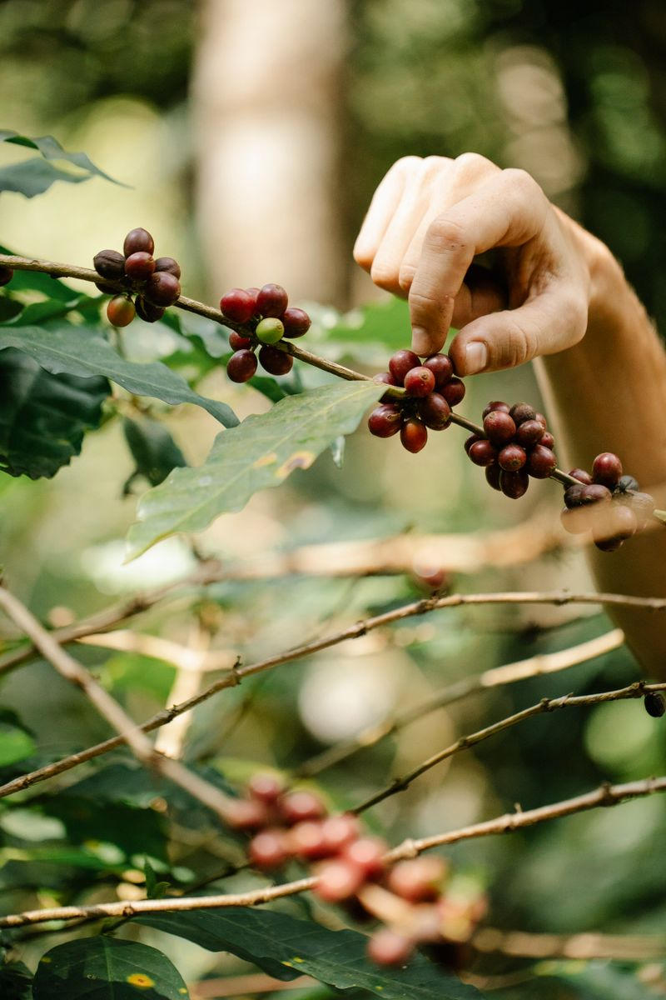

Walk into any grocery store and you'll find shelves of coffee labeled "premium," "gourmet," or "finest quality" — words that mean almost nothing. Specialty coffee is different. It's not a marketing term; it's a graded classification with a real, testable standard behind it.
It starts with a score
Specialty coffee is any coffee that scores 80 points or above on a 100-point scale used by certified tasters, known as Q-graders. They evaluate aroma, acidity, body, sweetness and aftertaste in a structured cupping session — the same tasting method our own team uses when we're deciding what goes on the bar.
Anything scoring below 80 is considered commercial-grade, which is what makes up the vast majority of coffee sold worldwide. The gap between commercial and specialty isn't subtle once you taste them side by side.
"Specialty" isn't a flavour — it's a standard. What that standard produces is coffee where a farm's soil, altitude and care actually show up in your cup.
Traceability matters
A specialty coffee can usually be traced back to a specific farm or cooperative, a particular harvest, and often a named variety of the plant itself. That traceability is what lets us tell you a coffee is from Yirgacheffe rather than just "Ethiopia" — and it's part of why we can vouch for how it was grown and processed.

Processing and roasting do the rest
Once picked, cherries are processed — washed, dried naturally in the sun, or somewhere in between (honey process). Each method pulls out different flavours: washed coffees tend to be cleaner and brighter, naturals fruitier and heavier. From there, a roaster's decisions about time and temperature either protect or mute those characteristics.
By the time a bag reaches our shelf, dozens of small decisions have already shaped what you'll taste. Our job is just the last step: brewing it in a way that lets all of that show.
Why it's worth the difference in price
Specialty coffee usually costs more — for the farmer, the roaster, and you. That premium reflects real costs: more careful harvesting, smaller batches, and fairer prices paid back to origin. We think it's worth it, and we think you'll taste why.